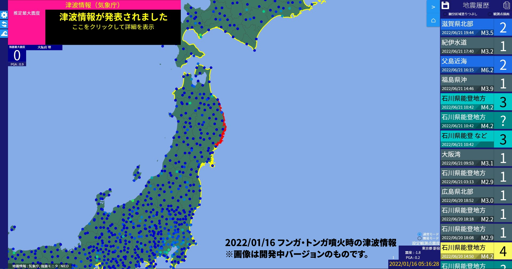

地震・津波情報表示ソフトウェア
EarthQuickly
EarthQuicklyは、気象庁が発表する緊急地震速報・地震情報・津波情報や、
NIEDの強震モニタを取得して表示するWindows向けソフトウェアです。

特徴 - Features
1. 緊急地震速報をいち早く受信
気象庁から発表される緊急地震速報をリアルタイムで受信し、
揺れへの注意・警戒を呼び掛けます。
また、強震モニタからリアルタイムの揺れの状況を取得し、
揺れを即座に把握することができます。

2. 最新の地震情報を受信・表示
気象庁が発表する地震情報を受信し、
視覚的に分かりやすく表示します。

3. 津波情報も併せて表示
気象庁が発表する津波警報等（大津波警報・津波警報・津波注意報）を受信し、
津波への警戒や避難を促します。

注意事項 - Caution
このソフトは、現在開発途中のベータ版です。
予期せぬ動作をしたり、地震発生時など重要な時に正常な動作をしない可能性があります。
そのためこのソフトを利用される際は、自己責任にてご利用ください。
また、万が一このソフトに問題が発生しても最新の情報が得られるようにするため、
このソフトを利用される際は他の情報ソースと併用してください。
このソフトには地震検出機能が備わっていますが、開発中の機能のため誤検出を起こす場合があります。
このソフトで利用している、緊急地震速報には様々な特性があります。それらを理解した上でご利用ください。
→参考 : 緊急地震速報とは（気象庁サイト）
最新版のダウンロード - Download
本日20時ごろに公開開始とお知らせしていましたが、
現在リリース準備に時間がかかっています。もう少しお待ちください。